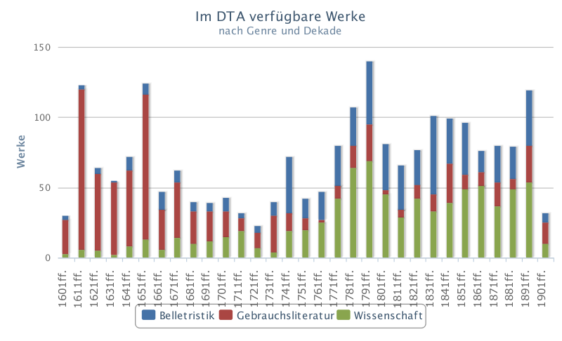
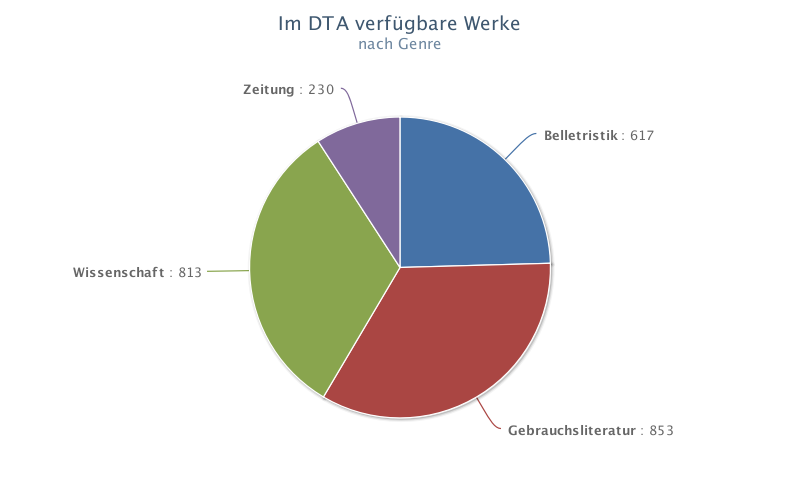
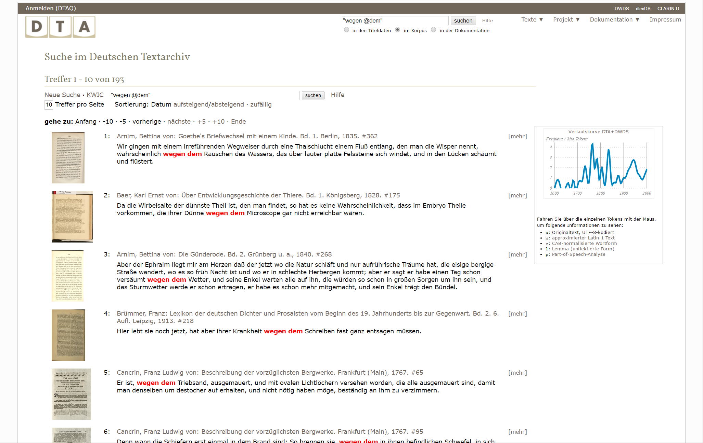
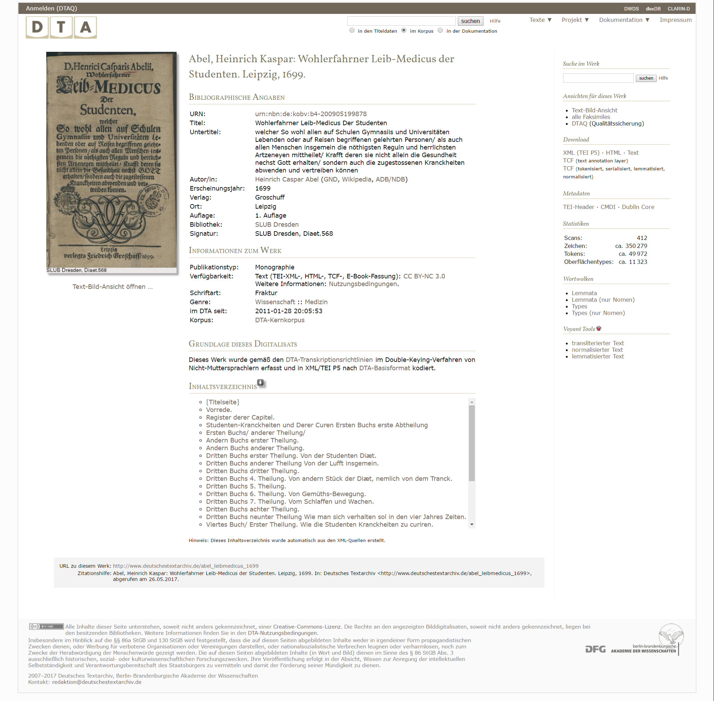
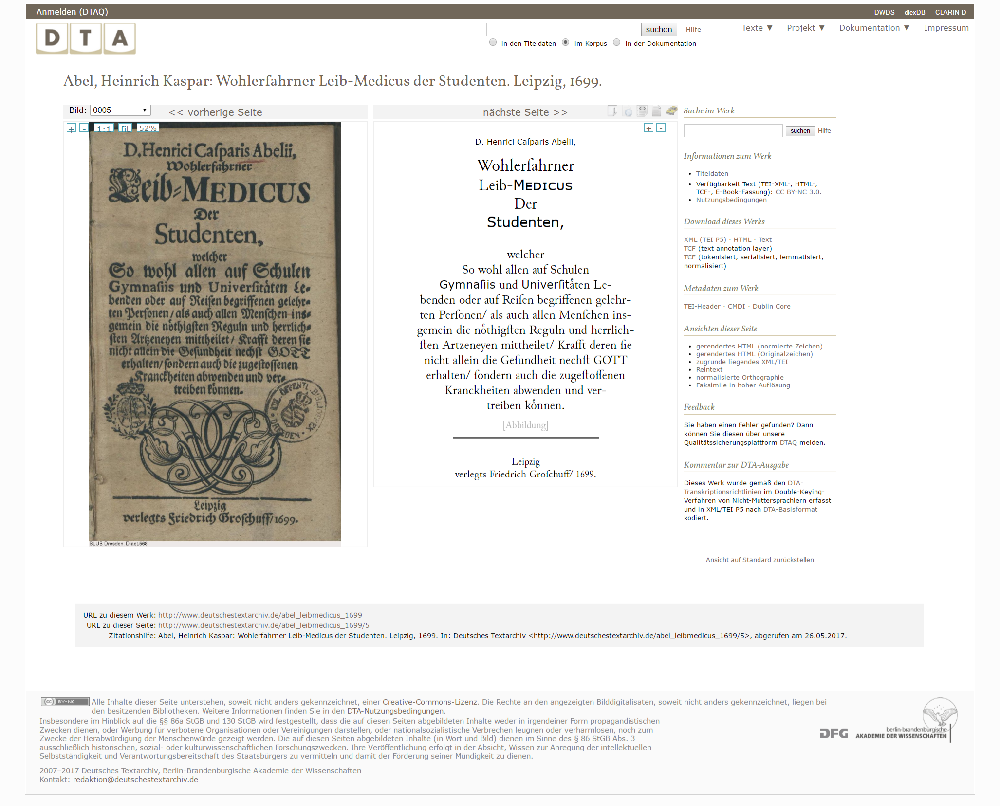
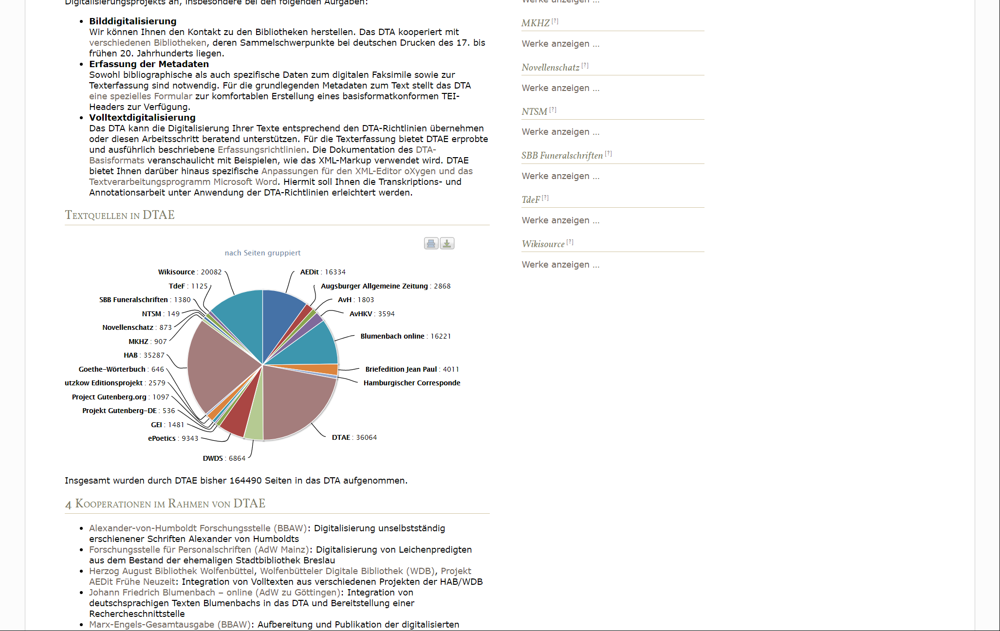

Deutsches Textarchiv
Table of Contents
Abstract
Owing to its well documented TEI subset and highly accurate transcriptions usually based on the first edition of a text, the German Textarchive (= Deutsches Textarchiv, DTA) is currently one of the best corpora for historical German texts (1600-1900), albeit not necessarily the most extensive. To date (August 2017) it contains around 3260 works. The full texts of the corpus are enhanced by digital facsimiles and encoded with regard to their visual features (e.g. layout, fonts) as well as annotated linguistically (e.g. PoS-tagging). The search engine focuses on linguistic features and allows for searching both exact spellings as well as spelling variants of a word. Due to its goal of providing a corpus for historical linguistics and the underlying selection criteria of the collection, no further comments or variants in other editions of one work than the first print are given. Even though there are minor points of criticism, due to the quality of its textual sources and the accurate documentation the DTA can be seen as a point of reference for other corpora.
Einleitung
Das Deutsche Textarchiv (DTA) entstand als Projekt an der Berlin-Brandenburgischen Akademie der Wissenschaften (BBAW) und wurde von 2007 bis 2016 von der Deutschen Forschungsgemeinschaft (DFG) unter der Leitung von Wolfgang Klein und Alexander Geyken gefördert. Mit derzeit (August 2017) über 620.000 Seiten aus mehr als 3.260 verschiedenen Werken aus der Zeit zwischen ca. 1600 und 19001 gehört das DTA zwar nicht zu den größten Textkorpora, doch dies ist gar nicht sein Anspruch. Die übergreifende Leitlinie wird dem Nutzer gleich auf der Startseite mitgeteilt:2 „Grundlage für ein Referenzkorpus der neuhochdeutschen Sprache“ oder, detaillierter, in den Leitlinien:3 „Ziel des Deutschen Textarchivs (DTA) ist die Erstellung eines disziplinenübergreifenden Volltextkorpus deutschsprachiger Texte“. In diesem Sinne geht es mehr um die Erreichung und Einhaltung einer verlässlichen Qualität der Texterfassung, insbesondere was die sprachlichen Eigenarten eines Textes angeht. Neben dieses ‚Kernkorpus‘ treten noch die sogenannten DTA-Erweiterungen.4 Hierbei handelt es sich um Texte, die teils unter anderen Gesichtspunkten ausgewählt und digitalisiert wurden (siehe Abschnitt zum DTA Erweiterungskorpus DTAE).
Das Kernkorpus
Aus der Zielsetzung des Kernkorpus ergeben sich viele der Eigenschaften des Deutschen Textarchivs, allen voran der Umstand, dass bei der Textauswahl und -aufbereitung hauptsächlich linguistische Gesichtspunkte im Vordergrund standen. Die Werke im DTA wurden nicht nach thematischen Gesichtspunkten ausgewählt, sondern, dem Ziel des Korpus entsprechend, wurde auf eine ausgewogene Zusammenstellung nach Textgenres geachtet und auf eine historisch-kritische Kommentierung der Texte verzichtet. Zur bestmöglichen Dokumentation des Sprachstandes wird überwiegend die erste verfügbare Ausgabe wiedergegeben.
 
Scheint die Verteilung unter den ersten drei Gruppen noch recht gleichmäßig zu sein, stellt eine detailliertere Betrachtung7 ein etwas anderes Bild dar: So enthält die Gruppe ‚Belletristik‘8 beispielsweise eine Untergruppe ‚Briefe‘ mit mehreren Bänden Briefsammlungen9 (sowie einem Tagebuch!), während die Untergruppe ‚Novelle‘ deutlich mehr Werke verschiedener Personen umfasst (mit einem auffälligen Übergewicht auf den Werken Theodor Storms). Auch andere Untergruppen wie etwa ‚Lyrik; Prosa‘ zeigen, dass hier gegebenenfalls noch etwas Klassifizierungs- wie Aufteilungsarbeit geleistet werden könnte.
Texterfassung und Formate
Das DTA versucht, bei den Texten des Kernkorpus eine möglichst hohe Erfassungsgenauigkeit zu erreichen. Neben der initialen Erfassung der Texte, die laut den Leitlinien in der Regel per Double Keying erfolgt, steht eine eigene browserbasierte Umgebung zur Qualitätskontrolle (DTA-Qualitätssicherung, DTAQ10) zur Verfügung. Über DTAQ können registrierte Benutzer Korrekturen und Annotationen am Text anbringen, die dann von Mitarbeitern des DTA geprüft und gegebenenfalls in die Texte eingearbeitet werden. Detailliert ausgearbeitete und sehr gut dokumentierte Regeln zur Transkription erlauben eine sehr verlässliche Auswertung der Texte, was auch durch das zugrunde gelegte Datenmodell unterstützt wird. Hierbei wurde basierend auf TEI P5 das DTA-Basisformat (DTA-Bf)11 erstellt, das ebenfalls vorbildlich dokumentiert ist. Dieses Format wurde dementsprechend auch von der DFG als Format für historische Texte empfohlen.12
Der Fokus des Formates und der Erfassungsarbeit liegt auf der exakten Erfassung der Textstruktur sowie der originalen Schreibweisen und damit dem Aufbau eines Korpus historischer Wortformen. Für die weitergehende linguistische Bearbeitung wird auf das im Kontext von CLARIN-D entwickelte Text Corpus Format (TCF)13 zurückgegriffen.
Wie bereits angesprochen kann die Dokumentation der Texterfassung und Modellierung des DTA in weiten Teilen als vorbildlich angesehen werden. Neben verschiedenen thematischen Zugängen (so zum Beispiel Metadaten und formale wie inhaltliche Erschließung) gibt es Übersichten zu den verwendeten Elementen und eine Suche innerhalb der Dokumentation. Da die Einhaltung dieser Regeln im Rahmen der Qualitätskontrolle DTAQ gesichert wird, sind die Texte des Kernkorpus in vielen Belangen der Goldstandard im Hinblick auf die weitere Verwendbarkeit. Ebenfalls positiv anzumerken ist, dass auch die Bestandteile der Dokumentation durch die Lizenz CC BY-SA 3.0 frei verfügbar sind.
Generelle Benutzerführung
Der Zugriff auf die Texte ist auf mehreren Wegen möglich. Am auffälligsten ist dabei direkt auf der Startseite die Suchmöglichkeit, die bei einer Volltextsuche innerhalb des Korpus auch linguistische Verfeinerungen erlaubt.
Als linguistische Suchengine wird DDC (‚Dialing/DWDS-Concordancer‘) verwendet, das umfangreiche linguistische Abfragen bietet. Unterstützt wird diese durch CAB (‚Cascaded Analysis Broker‘), ein Tool zur Findung moderner Wortformen zu historischen Schreibungen. Auch die (im Vergleich zu einfachen Volltextsuchen natürlich umfangreichere) Syntax der Engine ist mit Beispielen dokumentiert.14 Einige Features sind dabei die lexembasierte Suche (durch CAB gefundene Formen zu einem Grundlexem), Suche nach einer genauen Form mit oder ohne Trunkierung und die Suche von Phrasen (genaue Phrasen oder auch Wörter mit bestimmten Abständen zueinander) oder eine Suche aufgrund der Wortart. Diese Suchmöglichkeiten können für komplexe Anfragen miteinander kombiniert werden.

Neben der Volltextsuche gibt es in der Seitenspalte der Startseite die Möglichkeit zum ‚Stöbern im DTA‘, unter der alle Texte nach dem Jahrhundert der Veröffentlichung sowie nach der Textgattung (hier sehr weit gefasst in die drei Gruppen ‚Belletristik‘, ‚Gebrauchsliteratur‘ und ‚Wissenschaft‘; eine feinere Aufteilung erfolgt auf den jeweiligen Unterseiten) gruppiert werden. Dazu kommt im Menü ‚Texte‘ eine Zeitleiste, die die Titel nach ihrem Erscheinungsjahr zusammengefasst aufführt. Wer Werke eines bestimmten Verfassers sucht, muss entweder die Suche in den Titeldaten bemühen oder – weniger offensichtlich – in der Seitenspalte unter ‚Neue Werke im DTA‘ dem Link ‚alle Titel …‘ folgen.
Textansichten


DTA Erweiterungskorpus (DTAE)

Ausführlichere Informationen zu den einzelnen Quellen der übernommenen Texte sind nicht auf derselben Seite zu finden – unter der Graphik sind nur kurze Informationen zu den Kooperationen aufgeführt –, sondern unter ,Textquellen‘ in der Dokumentation.17 Hier erst findet man die Erklärung, dass sich unter dem Beiträger ‚DTAE‘ (wie er in der Grafik in Abb. 6 auftritt) kein Zirkelschluss verbirgt, sondern eine Zusammenfassung kleinerer Einzelquellen ohne genaue Zuordnung zu einer Institution.
In der rechten Spalte lässt sich auch eine Übersicht der Texte aufrufen, die aus den einzelnen Projekten übernommen sind. Eine Angabe, zu welchem Zeitpunkt und in welcher Form (Bilddigitalisat, Volltexte) Daten von einer Quelle übernommen wurde, sucht man hier wie auch in der Kurzbeschreibung vergebens. Die Liste enthält alle übernommenen Texte, auch wenn sie noch nicht kontrolliert wurden. Es ist nicht erkennbar, welche Links zu einem Volltext führen und welche zum DTAQ. Eine deutlichere Kennzeichnung wäre für den Benutzer hilfreich.
Zugänglichkeit und Nachnutzung
Die Texte werden in der Regel unter verschiedenen freien Lizenzen zur Verfügung gestellt. Genauere Angaben lassen sich auf den jeweiligen Seiten einzelner Werke entnehmen. Die verschiedenen zur Verfügung gestellten Downloadformate und Lizenzen erlauben eine Weiterverwendung in verschiedenen Forschungskontexten.
Als einfachste Variante der Übernahme ist ein Download des gesamten Korpus (nur Kernkorpus oder Kern- und Ergänzungskorpus) wie auch der einzelnen Gruppen, wie sie unter ‚Stöbern‘ zu finden sind, möglich. Eine Gruppierung der Texte durch den Nutzer ist zurzeit nicht umgesetzt. Es werden außerdem einzelne ‚Versionen‘ dieser Download-Optionen angeboten, wenngleich diese eher den Charakter von Snapshots mit schwankendem zeitlichen Abstand von teils fast zwei Jahren haben und so nur als grobe Versionierung der Texte dienen können.
Die bei der Erstellung des Korpus verwendete Software wird im Rahmen der Dokumentation ebenfalls knapp beschrieben,18 wobei aber nicht immer klar ist, ob und inwiefern es sich um Eigenentwicklungen handelt. Teile der Software sind für die eigene Nutzung verfügbar, doch ist bei den externen Links oft nicht ersichtlich, in welchem Umfang und unter welcher Lizenz diese Software-Stücke genutzt werden können. Für die Verwendung im XML-Editor oXygen wird eine auf das DTA-Bf zugeschnittene Anpassung zur Verfügung gestellt, die mit einer Veröffentlichung im November 2013 aber auf einer nicht mehr aktuellen Version von oXygen basiert.
Erfreulich ist das Angebot an APIs. Neben einer OAI-PMH Schnittstelle wird auch eine API zu CAB angeboten.19 Etwas dürftig ist allerdings die ‚Dokumentation‘ der APIs ausgefallen, beschränkt sie sich doch auf eine einfache Aufzählung von Links. Ohne weitere Unterscheidung stehen hier Atom-Feeds neben einem Link zur OAI-PMH-Schnittstelle oder einem OpenSearch-Wrapper für die oben beschriebene Suche. Ergänzende Informationen könnten an dieser Stelle hilfreich sein.
Abschließende Bemerkungen
Das Deutsche Textarchiv bietet seinem Anspruch entsprechend qualitativ hochwertig aufbereitete Texte, die insbesondere, aber nicht nur für die linguistische Nachnutzung einen ausgezeichneten Standard bilden. Die Dokumentation vor allem des verwendeten Datenformates kann mit Fug und Recht als vorbildlich bezeichnet werden. Kleinere Eigenarten der Benutzerführung oder der zur Verfügung gestellten Ansichts-, Browsing- oder Downloadoptionen stellen keine gravierenden Probleme dar und werden vom Projektteam im Rahmen ihrer Möglichkeiten sicherlich auch angegangen werden.
Es steht zu hoffen, dass auch in Zukunft das hohe Niveau der Textaufbereitung gehalten und das Textkorpus sukzessive weiter ausgebaut werden kann. Leider ist der Webseite nicht zu entnehmen, wie sich die weitere Zukunft des DTA gestalten wird, nachdem die Förderung durch die DFG 2016 ausgelaufen ist. Genauso fehlen Angaben, ob die Vorhaltung der Texte dauerhaft gesichert ist. Zwar ist davon auszugehen, dass ein solch prominentes Projekt einer Akademie nicht sang- und klanglos verschwinden wird, doch sollten nach Ablauf eines Projektes zumindest kurze Hinweise zu Fragen der Archivierung und langfristigen Verfügbarkeit gegeben und möglichst sichtbar platziert werden.
Der weitere Ausbau des Korpus auch durch externe Kooperationspartner lässt hoffen, dass sich die Datengrundlage noch deutlich erweitern wird. Kleinere hier angeführte Wermutstropfen schmälern die Leistung nicht und werden durch das Projektteam sicher geprüft werden. Durch die Qualität der Texte, aber insbesondere auch durch die Dokumentation des DTA-Basisformates hat das DTA Vorbildcharakter für viele andere Projekte.
Bibliography
- DTA: Deutsches Textarchiv. 2007-2017. Berlin-Brandenburgische Akademie der Wissenschaften. http://deutschestextarchiv.de/.
Notes
- Die Angaben sind der auf der Startseite recht prominent platzierten Statistik entnommen, die einen guten Überblick über die laufende Arbeit am Korpus gibt. ↑
- DTA, Startseite: https://web.archive.org/web/20170830180801/http://deutschestextarchiv.de/. ↑
- DTA, Leitlinien: https://web.archive.org/web/20170526105849/http://www.deutschestextarchiv.de/doku/leitlinien. ↑
- DTA, DTAE: http://www.deutschestextarchiv.de/dtae. ↑
- DTA, Dokumentation: https://web.archive.org/web/20170526085322/http://www.deutschestextarchiv.de/doku/textauswahl. ↑
- ‚Zeitung‘ als ‚Genre‘ taucht allerdings in der gattungsorientierten Auswahl auf der Startseite nicht auf. ↑
- Eine Übersicht über die Texte der Gruppen ist allerdings von hier aus nicht möglich; sie kann stattdessen von der Startseite aus erreicht werden. ↑
- DTA, Genre Belletristik https://web.archive.org/web/20170526103123/http://www.deutschestextarchiv.de/list/browse?genre=Belletristik. ↑
- Unter anderem Bettina von Arnims ‚Goethes Briefwechsel‘, eher ein Briefroman als eine unverfäschte Briefsammlung, und Ludwig Börnes ‚Briefe aus Paris‘, die auf Basis der früheren Edition der BBAW wiedergegeben wurden. ↑
- DTA, DTAQ: http://www.deutschestextarchiv.de/dtaq. ↑
- DTA, Basisformat: https://web.archive.org/web/20170526111458/http://www.deutschestextarchiv.de/doku/basisformat/. ↑
- http://www.dfg.de/download/pdf/foerderung/grundlagen_dfg_foerderung/informationen_fachwissenschaften/geisteswissenschaften/standards_sprachkorpora.pdf und http://www.dfg.de/download/pdf/foerderung/grundlagen_dfg_foerderung/informationen_fachwissenschaften/geisteswissenschaften/foerderkriterien_editionen_literaturwissenschaft.pdf. ↑
- Weblicht, TCF-Format: http://weblicht.sfs.uni-tuebingen.de/weblichtwiki/index.php/The_TCF_Format. ↑
- DTA, DDC-Suche: https://web.archive.org/web/20170526123024/http://www.deutschestextarchiv.de/doku/DDC-suche_hilfe. ↑
- Nach der Dokumentation der Suche sollten die Ergebnisse „alphabetisch nach dem Titel der Werke, in dem die Ergebnisse gefunden wurden, sortiert“ werden (vgl. https://web.archive.org/web/20170821082531/http://www.deutschestextarchiv.de/doku/DDC-suche_hilfe). Die Kopfzeile einer einfachen Suche nennt eine Sortierung nach Datum. Ohne weitere Eingriffe scheint jedoch, wie im abgebildeten Beispiel zu sehen, keine dieser Aussagen korrekt zu sein. Über die auf der Seite gegebenen Links oder über Parameter in der Suche kann zumindest eine Sortierung nach Datum erzwungen werden, eine alphabetische Anordnung ließ sich im Test nicht erreichen. ↑
- DTA, DTAE: http://www.deutschestextarchiv.de/dtae. ↑
- DTA, Textquellen: https://web.archive.org/web/20170526092945/http://www.deutschestextarchiv.de/doku/textquellen. ↑
- DTA, Software: https://web.archive.org/web/20170526122208/http://www.deutschestextarchiv.de/doku/software. ↑
- DTA, Dokumentation der APIs: https://web.archive.org/web/20170529084103/http://www.deutschestextarchiv.de/api, API zu CAB im Detail: http://odo.dwds.de/~moocow/software/DTA-CAB/. ↑
@article{dta,
author = {Kampkaspar, Dario},
title = {Deutsches Textarchiv},
journal = {RIDE – A review journal for digital editions and resources},
number = {6},
year = {2017},
doi = {10.18716/ride.a.6.8},
url = {https://doi.org/10.18716/ride.a.6.8},
}TY - JOUR
AU - Kampkaspar, Dario
TI - Deutsches Textarchiv
T2 - RIDE – A review journal for digital editions and resources
IS - 6
PY - 2017
DA - 2017/09
DO - 10.18716/ride.a.6.8
UR - https://doi.org/10.18716/ride.a.6.8
PB - Institut für Dokumentologie und Editorik e.V.
LA - de
ER - Kampkaspar, D. (2017). Deutsches Textarchiv. RIDE – A review journal for digital editions and resources, (6). https://doi.org/10.18716/ride.a.6.8Kampkaspar, Dario. "Deutsches Textarchiv." RIDE – A review journal for digital editions and resources, no. 6, 2017. https://doi.org/10.18716/ride.a.6.8.Kampkaspar, Dario. "Deutsches Textarchiv." RIDE – A review journal for digital editions and resources, no. 6 (2017). https://doi.org/10.18716/ride.a.6.8.